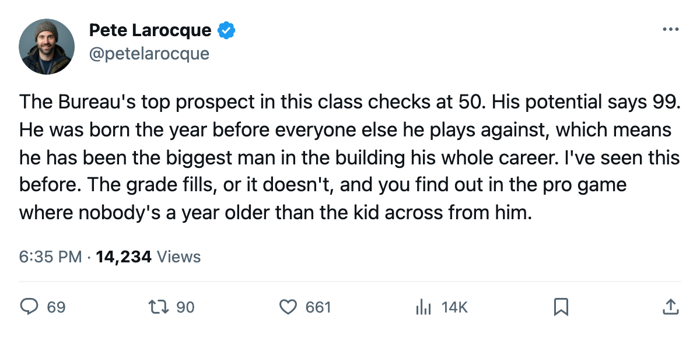
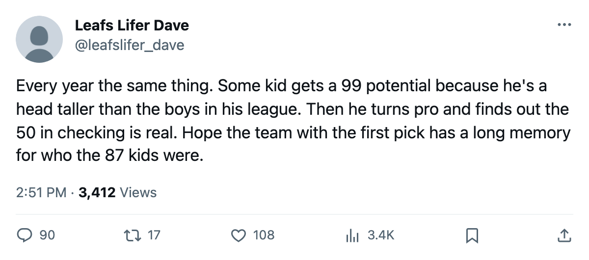

The Oldest Kids in the 2006 Class Play the Lowest Hockey on Paper
Three of the Junior Bureau's top 4 skaters were born in 1986. They carry 7 attribute grades at 50. The 4th, born a year younger, has a floor of 61.
 Pete LarocqueScouting editor · The Prospect File
Pete LarocqueScouting editor · The Prospect FileThree of the Junior Bureau's top 4 skaters in the 2006 class were born in 1986. Together they carry 7 attribute grades sitting at 50, the floor of the 50-to-99 scale. The 4th, Valeri Bunka, was born in 1987 and has no attribute below 61.
A player born in early 1986 competes in junior hockey against players born as late as December 1987. That is nearly 2 years of physical development separating him from the youngest kids on the other side. He is bigger and faster than everyone he faces, and the Bureau is grading him against that field. The potential number reflects what the kid looks like now, playing down an age class. The attribute grades show where he actually is.
| # | Prospect | Pos | Born | Potential | Floor | Ceiling | Attrs at 50 |
|---|---|---|---|---|---|---|---|
| 1 | Toni Kuki | LW | 1986 | 99 | CHKG 50 | PUCK 69 | 1 |
| 2 | Sergej Balodis | C | 1986 | 96 | SHPW 50 | CHKG 60 | 1 |
| 3 | Tuomo Pirnes | LW | 1986 | 96 | 50 ×5 | CHKG 61 | 5 |
| 4 | Valeri Bunka | LW | 1987 | 96 | SPEE 61 | CHKG 81 | 0 |
| 5 | Karl Jiranek | RW | 1987 | 93 | CHKG 50 | SHPW 72 | 2 |
| 6 | Vyacheslav Malevich | LW | 1986 | 92 | ACCU 50 | SHPW 61 | 2 |
| 7 | Marko Boman | LW | 1986 | 92 | PASS 55 | ACCU 65 | 0 |
| 8 | Vaclav Nedved | RW | 1987 | 91 | CHKG 50 | PASS 71 | 2 |
| 9 | Karel Kotalik | C | 1987 | 91 | SPEE 64 | CHKG 84 | 0 |
| 10 | Karel Kloucek | RW | 1987 | 91 | CHKG 50 | SHPW 74 | 1 |
The top 2 goalies are excluded. Björn Lieder, born 1986, potential 97, carries a floor of 68 in rebound control. Lars Loof, born 1987, potential 94, has a 50 in rebound control. The goalie pattern runs opposite to the skater pattern, so the skater cut is where the age argument holds.
The 50 club is where the draft money goes
Toni Kuki sits at potential 99, the highest grade on the Bureau's board. His CHKG reads 50. Sergej Balodis carries a 96 potential and a SHPW of 50. Tuomo Pirnes has a 96 potential with five of his six attributes at 50. His only grade above the floor is a 61 in checking.
A 50 on the Bureau's scale is the minimum grade. It means the player is barely functional in that area. A potential of 96 means the Bureau thinks the player becomes a top-line professional. The distance between those two numbers is enormous, and the 3 1986-born skaters at the top of the board live inside it.
The argument for the 1986 kids is straightforward: they have more time to grow into their frames, the skills catch up, the potential grade fills. That is what the Bureau says. The argument against is that a player who is 19 and cannot shoot above a 50 in any measurable way has been playing against younger competition for his whole junior career, and the attribute grades have not moved past the floor.
The 1987 kid who already has it
Valeri Bunka, born 1987, potential 96, has attribute grades that match his true age. His CHKG of 81 is the second-highest single attribute among the top 10 skaters in the class. His lowest grade, the 61 in speed, is above Kuki's floor but below Kuki's best, the 69 in Puck Handling. He is the only skater in the top 4 who does not have a 50 anywhere on his card.
Karel Kotalik, born 1987, potential 91, tells the same story. His lowest attribute is a 64 in speed, and his CHKG of 84 is the highest single attribute among all 10 skaters in this table. He is a year younger than Pirnes and his entire attribute profile sits above every single grade Pirnes has.
What the Bureau sees at 19 versus 20
I wrote on this class in late November and called Victor Latypov the best player in it on current attributes, with a potential of 78 that the Bureau says is where his career peaks. That piece drew the ceiling argument. This one draws the floor argument.
Latypov, born 1986, has a floor of 72 in speed and a ceiling of 82 in checking. He plays a complete game right now. The Bureau says it stops there. Kuki, also born 1986, has a floor of 50 and the Bureau says his career goes to 99. Both are the same age, in the same class, graded by the same Bureau. One has peaked. The other has barely started. The attribute grades do not tell you which is which.
The 2006 rookie draft is 166 days away. Whoever holds the first pick is buying a potential grade. The question is whether the 50s fill or whether they were always there, hiding behind a kid who was the biggest man on the ice because the calendar said he had to be.

